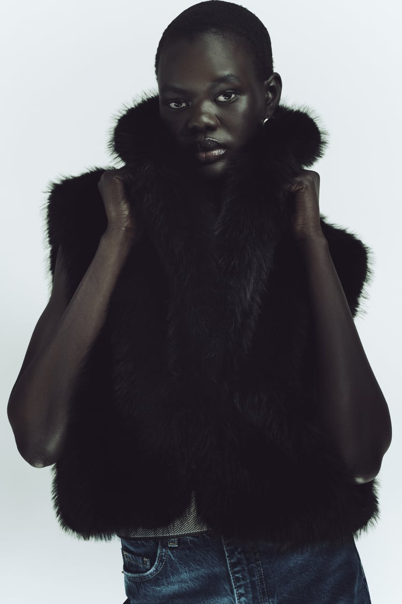
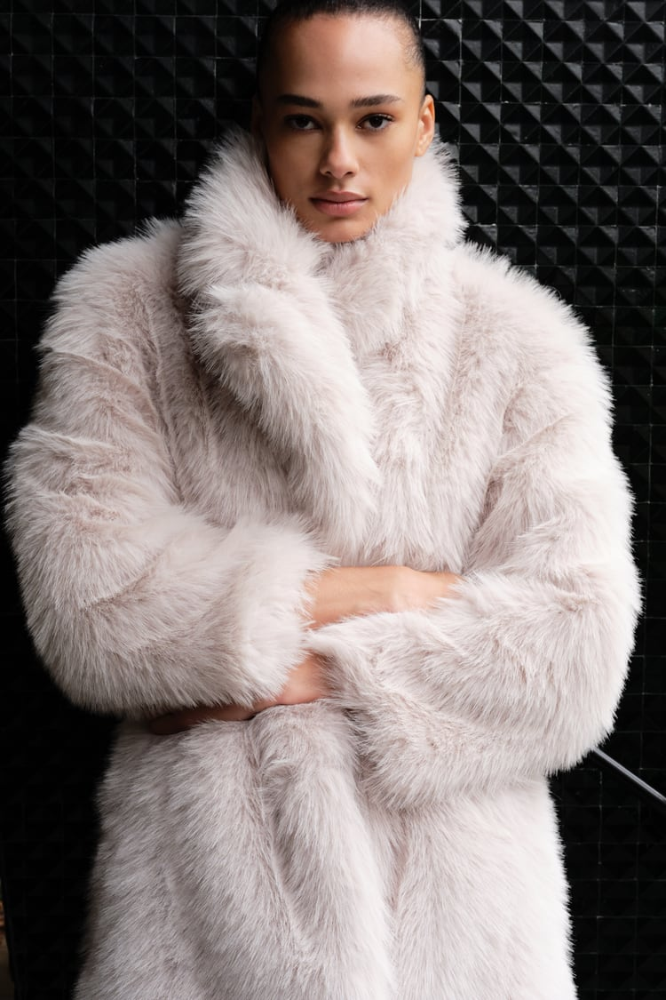
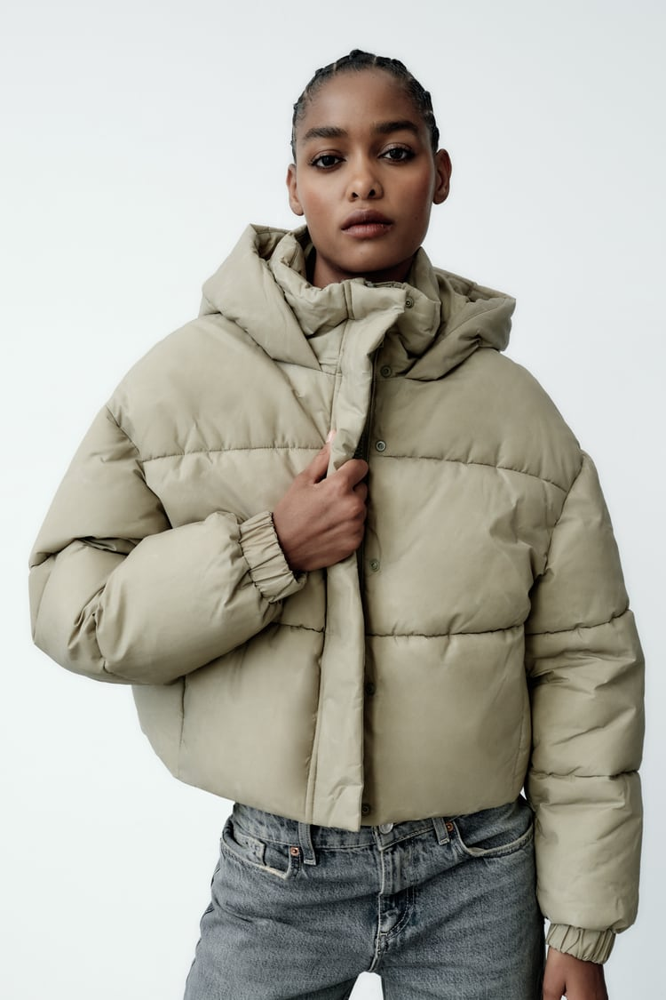
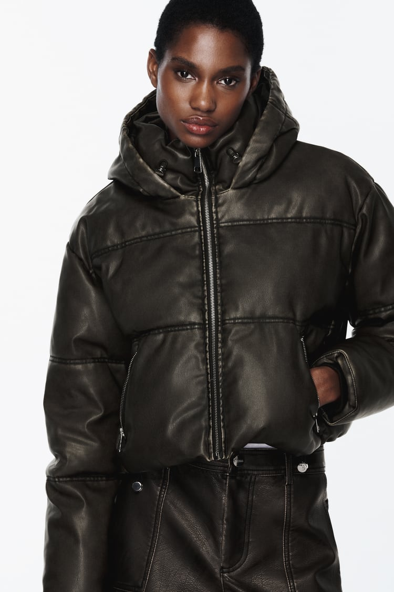

| Навигация сайта |
|---|
| Навигация сайта |
|---|
| Содержание |
|---|
Наступил зимний сезон 2024 года, и снова все модницы активно ищут и интересуются последними новинками и трендами в мире моды. Zara, как всегда, предлагает уникальные и стильные решения для тех, кто хочет выглядеть модно, стильно и одновременно тепло в зимний период.
В этом сезоне, Zara уделяет особое внимание экологичности и социальной ответственности, поэтому многие предметы коллекции изготовлены из переработанных материалов или с использованием устойчивых технологий. Основные тренды включают объемные пуховики и парки, многослойность, крупные принты, микс стилей и преобладание темных цветов.
В коллекции зимы 2024 года от Zara особенно стоит обратить внимание на следующие предметы:
Примеры верхней одежды коллекции 2024:
| Название | Фото (ссылка) |
|---|---|
| Укороченный жилет из искусственного меха |  |
| Пальто из искусственного меха |  |
| Стёганая куртка с эффектом потертости |  |
| Пальто-дубленка с накладным карманами | |
| Двустороннее пальто с пуговицами |  |
| Короткий стёганый анорак из искусственной кожи |  |
Для создания уникального стильного образа стоит обратить внимание на сочетание трендовых вещей между собой и с ежедневным гардеробом. Например, объемный пуховик может быть сочетан с вязаными брюками и массивными ботильонами.
Бренд Zara стремится к улучшению состояния окружающей среды и уменьшению своего отпечатка на планете. Поэтому в новой коллекции можно найти множество предметов, изготовленных из переработанных материалов или с использованием устойчивых технологий. Такие вещи не только стильные и модные, но и полезные для нашей планеты.
В коллекции зимы 2024 года подобные меры представлены следующим образом